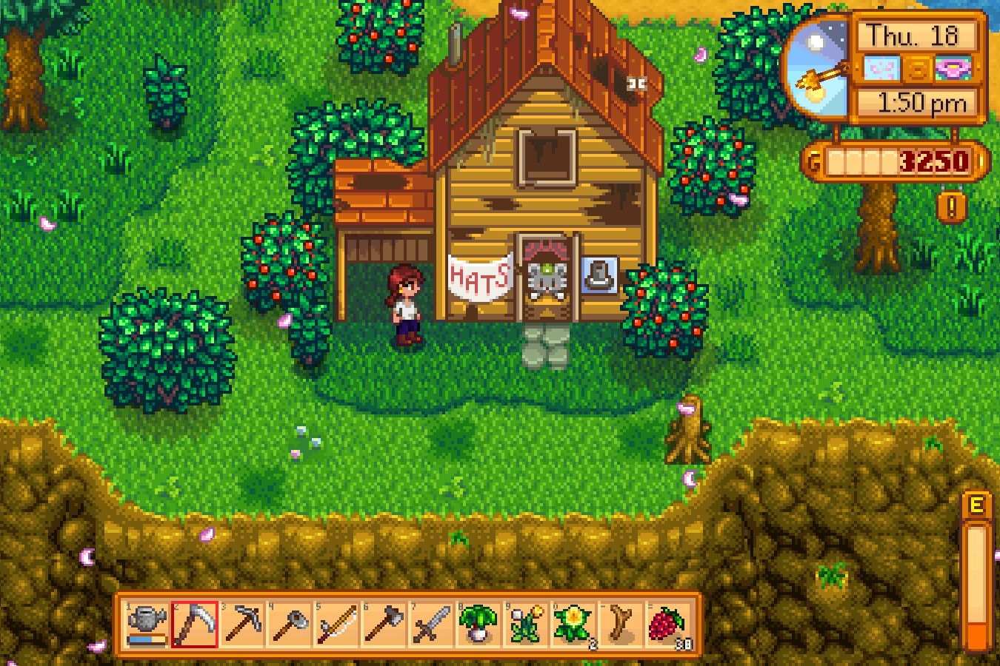

Gameplay
Some tasks are more engaging than others; farming specifically became a grind when I had to water every plant individually, for example, though later upgrades rectified this. However, the minigames that come along with fishing or mining are subtly complex. They require more strategy than initial appearances would suggest, utilizing elements such as the weather to succeed in your catch.
